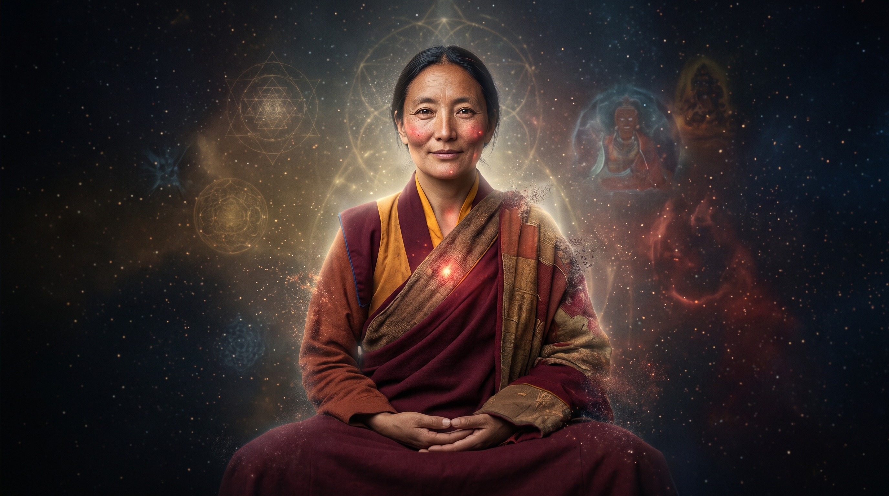
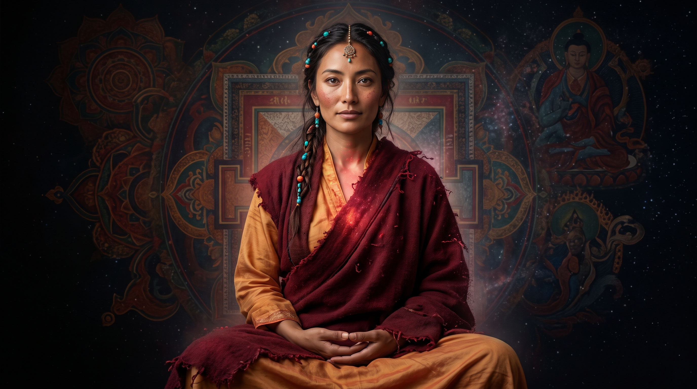
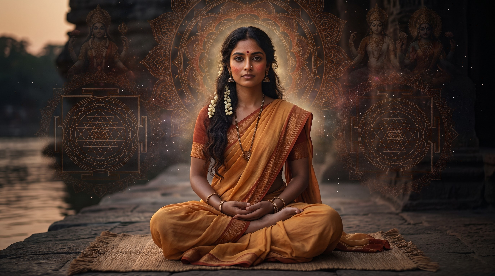
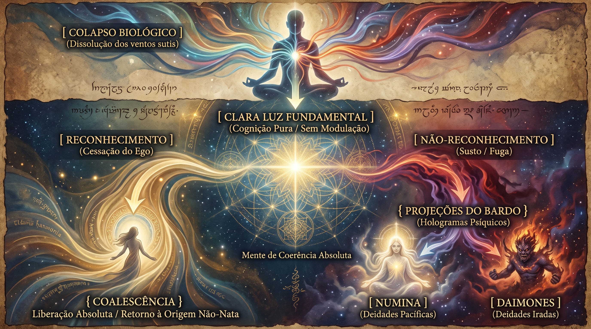
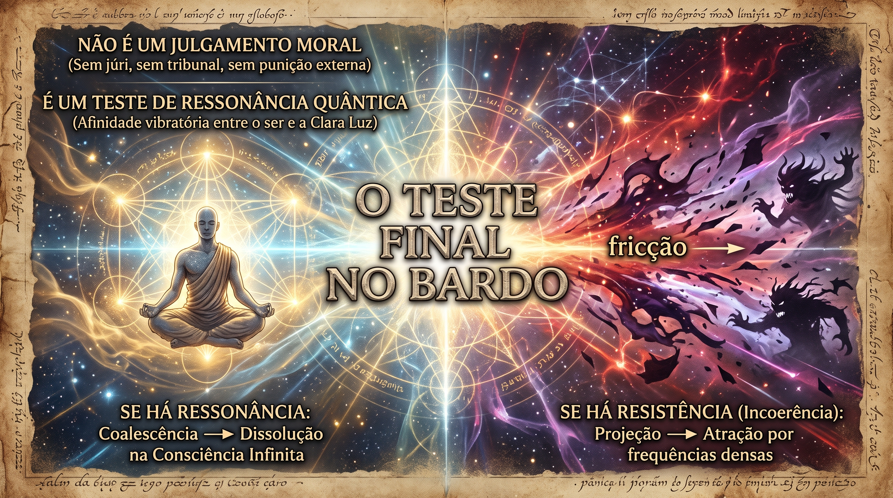
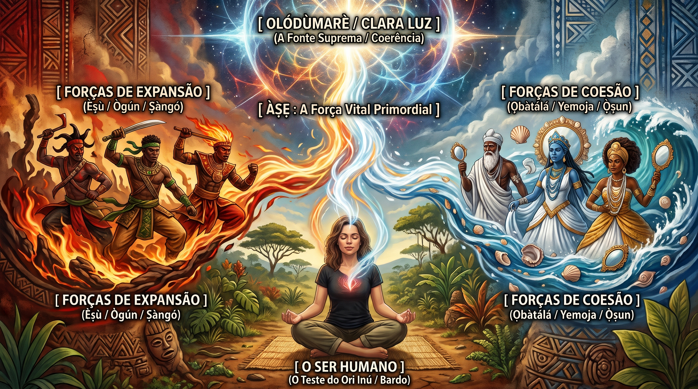

As Personificações da Clara Luz
Antes de nos aprofundarmos na filosofia e na prática, é fundamental visualizar e acolher a própria "Clara Luz" (Ösel/Prabhāsvara) personificada de forma humana. Abaixo, apresentamos as três representações históricas e geográficas que traduzem essa sabedoria transcendente:



1. A Ontologia da Clara Luz (Ösel): A Consciência Pura na Hora da Partida
A Clara Luz (Ösel, em tibetano) não é um feixe de luz física ou uma visão que os olhos captam; ela é o próprio fundamento de quem nós somos. Na tradição da Grande Perfeição (Dzogchen) e nas fases mais profundas e místicas do Budismo do Himalaia (Vajrayana), a Clara Luz é explicada como a nossa natureza mais profunda, um estado de cognição pura e sabedoria que está livre de qualquer pensamento, limite ou preocupação diária. É o "Campo Mental" em seu momento de paz mais absoluto, sem as oscilações e ruídos da vida rotineira.
Para entender como esse fenômeno se revela no momento da transição final, é preciso olhar para a "fisiologia sutil" (as correntes invisíveis de energia que dão vida ao nosso ser) no momento em que o corpo desliga. De acordo com os ensinamentos budistas sobre o morrer, o processo de falecimento é uma dissolução gradual e suave das energias ligadas aos elementos da natureza (terra, água, fogo, ar e espaço), que formam o nosso corpo e a nossa vitalidade. Essas correntes são chamadas de "ventos sutis" (pranas ou lung). Eles são como a fiação elétrica de nossa mente cotidiana: conduzem nossas emoções, nossos desejos e as milhares de ideias fragmentadas que temos todos os dias.
Quando o nosso corpo físico e o cérebro (o terminal biológico) param de funcionar, essas correntes de energia se recolhem e cessam:
- Primeiro, desativam-se as correntes mais externas, ligadas aos nossos cinco sentidos e ao funcionamento dos órgãos físicos.
- Em seguida, os fluxos de energia interna que sustentam nossos pensamentos habituais (como o apego, a aversão e a distração) se recolhem para o canal sutil que passa pelo centro do peito (avadhuti).
- Na fase final desse processo de recolhimento, as forças energéticas mais íntimas se encontram no coração, gerando uma breve e total escuridão — o último véu do ego se desfazendo.
No momento em que esse último véu cai e as correntes mentais se calam, toda a agitação do ego se apaga. O que resta é a nossa essência mais pura, a consciência livre de medos e máscaras: a Clara Luz Fundamental (Zhi’i ’Od Gsal). Sem o cérebro para dividir a realidade em "eu" contra "o mundo", e sem o ego para criar julgamentos, a consciência se depara com a sua própria vastidão em paz. É a lucidez que brilha por si mesma no infinito, como um céu limpo que finalmente aparece quando todas as nuvens se dissipam.
2. O Teste do Bardo: O Reconhecimento e as Projeções da Mente
O Bardo Thodol (conhecido popularmente como o Livro Tibetano dos Mortos) nos ensina que o pós-morte não é um apagão ou um vazio escuro, mas uma jornada de transição ativa chamada de Bardo. E o grande momento dessa travessia é o teste de reconhecimento.

Logo após a transição, a consciência depara-se com essa imensa vastidão luminosa. Se a pessoa treinou a sua mente em vida para silenciar o ego e reconhecer a paz e o espaço como a sua verdadeira casa, ocorre a liberação por coalescência (Rigpa-Kaye). O que isso significa? A alma reconhece a Clara Luz não como algo estranho ou assustador fora dela, mas como a sua própria face real. Como uma gota d’água que volta para o oceano, a consciência se funde a essa paz infinita, encerrando os ciclos de sofrimento e renascimento involuntário (Samsara).
Porém, se a pessoa não buscou acalmar a sua mente em vida e se agarrou ao ego e ao medo, o encontro com a imensidão da Clara Luz pode causar um imenso susto e confusão. Sem o corpo físico e a rotina da vida para se distrair, a mente se assusta diante do infinito e tenta recuar, procurando formas de se proteger e restabelecer sua identidade fragmentada. É essa reação de pânico e fuga que dá início às projeções ilusórias.
Nesse estado, todas as memórias acumuladas, os medos inconscientes e os desejos não resolvidos começam a se projetar ao redor da consciência como se fossem reais, criando visões que o Livro Tibetano dos Mortos chama de deidades ou divindades:
- As Forças Serenas (Os Numina): Aparecem como seres pacíficos, bonitos e acolhedores, que refletem as nossas próprias qualidades positivas e anseios de amor. No entanto, se não compreendermos que essas visões são projeções da nossa própria mente, ficamos apegados a elas como se fossem externas, perdendo a chance de nos unirmos ao todo.
- As Forças Assustadoras (Os Daimones): Surgem como figuras coléricas, irritadas ou aterrorizantes, que personificam os nossos medos guardados, as culpas e as agressividades não resolvidas. Se a consciência entra em pânico e foge dessas imagens, ela é empurrada de volta pela sua própria agitação para um novo renascimento de sofrimento.
Na nossa linguagem atual, essas figuras pacíficas e terríveis nada mais são do que imagens criadas pelo nosso inconsciente (nossos sonhos, medos e instintos) que, sem o filtro do cérebro físico, tomam a forma de cenários tridimensionais que parecem absolutamente reais. Elas não são deuses externos que vêm nos castigar; são apenas o espelho da nossa mente, que cria drama para continuar existindo como um "eu" separado.
3. O Rubor do Dia a Dia e a Afinidade Vibratória
A Clara Luz não é algo distante, reservado apenas para o momento final de nossas vidas; ela é a base de cada segundo da nossa jornada. Em nosso cotidiano, a sua sutil presença se revela através do que chamamos de Rubor.
O Rubor é como uma "microdose" da Clara Luz que atravessa as barreiras do nosso ego sempre que assumimos um momento de verdade absoluta. Quando tomamos uma decisão com honestidade profunda, quando encaramos uma realidade difícil sem mentir para nós mesmos, ou quando agimos com amor verdadeiro e desinteressado, a nossa mente agitada silencia por um instante. Nesse silêncio, a nossa natureza real brilha e sentimos uma paz e uma clareza inconfundíveis — uma pequena e saudável "morte" das nossas ilusões e máscaras diárias. Cada verdade assumida em vida é, na verdade, um ensaio e um preparo para a transição final.
Por essa razão, o teste final no Bardo não é um julgamento moral com um tribunal de pecados, conduzido por uma força externa que decide se "fomos bons ou maus". Ele é, na verdade, um teste de ressonância quântica.

O que determina a liberação ou o renascimento é a **compatibilidade natural** e vibratória da alma. Se, através do exercício da verdade em vida (o Rubor), a nossa consciência aprendeu a ser desapegada, honesta e em paz, ela vibrará na mesma sintonia da Clara Luz no momento do desencarne. O reconhecimento acontecerá de forma automática, permitindo que o ser se funda ao Todo com naturalidade e leveza.
Contudo, se a mente passou a vida acumulando ruído, apegos, falsidades e mágoas, a sua vibração estará muito densa e em descompasso com a tranquilidade da Clara Luz. Sentindo-se "inadequada" ou desconfortável nessa frequência pura de silêncio, a consciência se assusta e foge, sendo atraído de volta para reinos agitados e novas existências que correspondam exatamente ao nível de agitação e ilusão que ela mesma cultiva. Não há punição; há apenas atração pelo que é semelhante.
4. A Clara Luz e o Àṣẹ dos Orixás da África Negra
Ao conectarmos a filosofia da Clara Luz com as tradições iorubá e banto da África Ocidental e Central, percebemos que a luminosidade da consciência pura e o poder dos Orixás habitam o mesmo universo invisível, embora falem com linguagens culturais e ricas em natureza.
No pensamento africano tradicional, o universo é mantido e animado pelo Àṣẹ (Asé ou Axé) — a força invisível, dinâmica e viva que preenche todas as coisas, desde uma rocha até as maiores divindades. Se a Clara Luz é a mente em paz e clareza absoluta, o Àṣẹ é a energia vital que preenche essa paz, dando movimento e cor a tudo o que existe. No momento da morte, a dissolução dos nossos "ventos sutis" é o retorno do Àṣẹ individual (Ori Inú) ao grande e generoso oceano de força divina governado por Olódùmarè (a fonte suprema e incriada, equivalente à transcendência da Clara Luz).
Nesse contexto, os Orixás não são apenas figuras de deuses personificados. Em sua origem africana, eles são as **grandes forças da natureza** (Imolẹ) e os **ancestrais sagrados** que personificam as diferentes qualidades e caminhos do Àṣẹ:

Na travessia do pós-morte, as forças da natureza e a sabedoria da nossa linhagem se encontram de forma profunda com a nossa consciência:
- Èṣù (Exu): O movimento, a transformação e a comunicação. É a própria dinâmica da transição do Bardo, a força que nos permite atravessar o visível (Ayé) para o invisível (Orún). No teste de ressonância, Èṣù é o guardião da encruzilhada que desafia a nossa consciência a abandonar as ilusões.
- Ògún (Ogum): A força que quebra obstáculos, trazendo a coragem e a capacidade de transformar. É o impulso que destrói as barreiras e medos do nosso ego para que possamos enxergar nossa essência real.
- Ṣàngó (Xangô): A justiça natural, o fogo e o trovão. Xangô representa a ressonância exata da verdade (o Rubor) que destrói a falsidade de nossa mente. É o trovão da justiça cósmica que clama pela verdade.
- Ọbàtálá (Oxalá): A força da criação, associada ao branco e à serenidade. É a representação mais íntima da paz e pureza da Clara Luz, a mansidão e a calma que acolhem o ser que reconhece a sua própria origem.
- Yemoja (Iemanjá) e Ọ̀ṣun (Oxum): As grandes águas de mãe e de fertilidade, ligadas à memória e à continuidade da vida. São os rios e mares onde a nossa alma se banha e busca acolhimento caso a liberação total ainda não tenha chegado.
No encontro com o fim de nossas existências físicas, os Orixás não devem ser vistos como forças assustadoras ou de julgamento moral, mas sim como o próprio Àṣẹ que nos acompanhou durante toda a vida. A nossa cabeça (Ori) precisa apenas estar sintonizada com a verdade de cada Orixá. Assim, o processo de liberação assemelha-se a um retorno em paz para o Orún, onde a nossa alma se funde com os elementos que a geraram, livre dos fardos e apegos do mundo físico.
5. Ritual de Ativação do Àṣẹ e Busca pelo Equilíbrio
Este ritual foi concebido para alinhar o nosso Ori Inú (a consciência íntima) com o Àṣẹ de vitalidade e tranquilidade dos Orixás, ajudando a pessoa a viver a sua verdade diária (o Rubor) e a se manter em harmonia com as transições de sua vida. Este não é um ritual de morte ou despedida, mas uma cerimônia de revitalização e paz, feita para os vivos.
Pode ser feito ao ar livre, sobre a terra, ou em um local silencioso e limpo, de preferência ao amanhecer ou ao pôr do sol, momentos em que a natureza sutilmente muda de frequência.
Itens e Oferendas da Terra (Oúnjẹ) & Símbolos Naturais:
- Obí (Noz-de-cola): Nozes-de-cola vermelhas e brancas, usadas para abrir a comunicação e trazer equilíbrio às nossas forças mentais.
- Orógbó (Noz-de-cola amarga): Que representa os antepassados, a justiça e a longevidade.
- Oyin (Mel de abelha): O doce da vida, a harmonia e o aconchego para a alma.
- Epo Pupa (Azeite de dendê): Força de calor, ação e transformação.
- Oti (Bebida de grãos ou palmeira): Usado para saudar e movimentar as energias.
- Iyo (Sal): O sabor, a preservação e a estabilidade da vida.
- Agbon (Coco): Cujo líquido puro de seu interior acalma os nossos pensamentos e energias.
- Inhame Assado ou Cozido: Alimento de base, fartura e ligação com a terra e os ancestrais.
- Efun (Giz de calcário/Argila branca): Símbolo de paz, clareza e da própria tranquilidade da Clara Luz.
- Osun (Pó vermelho de sândalo africano): Força da vida, o "rubor" e a vitalidade.
- Folhas Sagradas (Ewe): Como Akoko, Manjericão ou Peregum para limpeza e frescor.
- Uma esteira de palha (Eni) para delimitar o seu espaço no solo, e uma cabaça (Igbá) com água (Omi) para refrescar e acalmar.
O Ritual de Ativação
Preparação e Purificação
1. Estenda a sua esteira de palha sobre o chão.
2. Organize à sua frente a vasilha com água e os alimentos sagrados colocados sobre folhas ou pratos naturais.
3. Faça um círculo de giz branco (Efun) no chão ao redor da esteira, traçando também marcas suaves na sua testa, no alto da cabeça (Ori) e nos pulsos para simbolizar o seu pedido de paz e clareza interior.
4. Borrife um pouco de água ao redor da esteira, dizendo em voz calma: "Omi tutu, Ona tutu, Ile tutu" (Que a água fresca acalme o meu ser, os meus caminhos e a terra).
A Abertura e a Comunicação (Èṣù)
1. Pingue algumas gotas de azeite de dendê e de bebida (Oti) na terra à frente da esteira para saudar o movimento da vida.
2. Peça que os caminhos da sua mente se abram:
"Èṣù, força que permite as nossas transformações e transições, abra os caminhos da minha mente. Afaste as ilusões e o medo do meu dia, e que o Àṣẹ de paz encontre espaço em meu ser. Que a confusão dê lugar à verdade."
3. Parta uma noz-de-cola (Obí) com as mãos e coloque-a na terra como sinal de coração aberto e harmonia.
Honrando Nossos Antepassados (Egúngún)
1. Ofereça pedaços de inhame, mel e sal à terra para saudar aqueles que vieram antes e nos deixaram sua força:
"Ancestrais que caminharam na Terra e que me deram vida, eu saúdo a sua força. Que o seu amparo me ajude a ter sabedoria e que a sua memória me ajude a encarar o meu dia com verdade e paz."
O Resfriamento da Cabeça (Ori)
1. Abra o coco (Agbon), pegue um pouco da sua água e passe-a suavemente com as pontas dos dedos no alto de sua cabeça, na testa e na nuca, acalmando o seu Ori.
2. Fale com a sua própria mente:
"Ori Inú, minha consciência íntima, o deus em mim. Acalme as minhas aflições, cure as minhas ansiedades. Que eu tenha a coragem de viver na verdade diária e que eu perca o medo de minhas próprias transformações. Traga equilíbrio e paz para os meus pensamentos."
Consagração e Força Vital
1. Toque o Orógbó na testa e no peito e coloque-o com as oferendas, pedindo para ter uma vida justa, autêntica e forte.
2. Coma um pequeno pedaço de obí ou orógbó, sinta a força da semente, e em seguida ponha um pouco de mel nos lábios, lembrando que a vida nos traz tanto os desafios da verdade (o Rubor) quanto a doçura do descanso.
3. Salpique um pouco do pó vermelho (Osun) e do giz branco (Efun) na terra, unindo a vitalidade e a paz.
Encerramento e Quietude
1. Sente-se na esteira em silêncio. Deixe o corpo relaxar e a respiração se acalmar diante da vasilha de água.
2. Sinta que a sua agitação interna está sendo acolhida e que você está conectado ao seu próprio silêncio profundo.
3. Finalize batendo palmas três vezes e agradecendo: "Ibà Òriṣà, Ibà Èṣù, Ibà Ọbàtálá. Àṣẹ, Àṣẹ, Àṣẹ!" (Que as forças naturais, a transformação e a paz estejam comigo. Assim seja!).
6. O Livro Tibetano dos Mortos: As Duas Representações em Português
Para desfazer de vez a confusão comum sobre a Clara Luz ser indiana ou tibetana, é importante sabermos que ambas estão certas! Elas representam a mesma paz, apenas adaptadas ao clima, cultura e história de cada região:
A Clara Luz Indiana (Prabhāsvara)
Na Índia (nos primórdios do Budismo e na tradição dos Upanishads), a Clara Luz é chamada pelo termo sânscrito Prabhāsvara. Em nosso idioma, podemos traduzi-la como Luminosidade Natural ou Mente Brilhante Original.
Aqui, a ênfase é na limpeza natural e original do nosso ser, como a água cristalina de uma fonte natural que continua pura por baixo de qualquer sujeira passageira. A personificação indiana traz a leveza do algodão e da seda, cercada por uma natureza quente e acolhedora, perto de templos de pedra e do rio Ganges, ilustrando uma mente que reencontra a sua transparência longe do estresse.
A Clara Luz Tibetana (Ösel)
No Tibet (onde o budismo foi acolhido nas altas altitudes e deu origem ao Livro Tibetano dos Mortos), o conceito foi nomeado como Ösel, o que chamamos em português de Clara Luz Fundamental ou Luminosidade do Bardo.
No clima frio do Himalaia, a ênfase mudou para a travessia das grandes perdas, o morrer e a travessia das visões psíquicas. É a consciência que, após o colapso dos nossos sentidos e pensamentos diários, depara-se com o vazio em paz e precisa se auto-reconhecer sem medo para não cair de volta nos medos e fantasmas do ego. Ela é representada com trajes de lã grossos (chubas) e em um cenário cósmico de dissolução, refletindo o limiar radical entre a morte biológica e a pura liberação.
| Nome Tradicional | Tradução Livre em Português | Sentido da Representação | Ambiente e Detalhes |
|---|---|---|---|
| Prabhāsvara (Sânscrito / Índia) |
Luminosidade Natural / Mente Brilhante Original |
A pureza inata e limpa que sempre esteve em nós, encoberta pelo cansaço do dia a dia. | Teias de seda leve, clima quente, templos de pedra e natureza tropical do Ganges. |
| Ösel (Tibetano / Tibet) |
Clara Luz Fundamental / Luminosidade do Bardo |
O reencontro com a nossa verdade sem medo durante a grande transição da perda e da morte. | Mantos de lã pesados e sobrepostos (Chuba), pedras naturais de altitude e atmosfera cósmica e etérea de Bardo. |
7. Amuletos de Ancoragem: Lembrança de Paz e Equilíbrio no Cotidiano
A vida pode ser agitada, e é muito comum nos esquecermos da nossa paz natural de Clara Luz. Por isso, as tradições antigas recomendam o uso de "amuletos" ou âncoras físicas — pequenas pedras naturais ou sementes que, pelo toque ou visão, ajudam a lembrar do nosso compromisso diário com a verdade, com o Rubor e com a nossa tranquilidade interior.
Carregá-las no bolso, usá-las em um colar ou mantê-las na mesa de cabeceira funciona como um botão de "pausa" mental em horas de ansiedade ou incertezas:
Símbolos de Enraizamento e Equilíbrio:
- O Cristal de Quartzo Transparente: É a Clara Luz em forma física. Sem cor própria, ele reflete tudo ao seu redor sem mudar o que ele é por dentro. Segurá-lo ajuda a lembrar que a sua mente profunda é exatamente igual: espaçosa, transparente e em paz por trás do turbilhão de problemas.
- A Pedra da Lua: Translúcida e com brilho sutil, é a pedra das transições e travessias. Serve para nos recordar que as mudanças, crises e perdas são apenas fases naturais. Ela acalma o pânico de perder o controle e nos faz navegar pelas mudanças da vida com aceitação.
- A Cornalina ou Jaspe Vermelho: Representa o calor do Rubor e o Àṣẹ do movimento. Com sua cor avermelhada, traz de volta a vitalidade, a honestidade e a coragem de agir de acordo com a própria verdade (o ensaio diário de integridade que nos prepara para a liberdade).
- O pedaço de Obí ou semente natural: O amuleto iorubá para acalmar o Ori (a cabeça). Carregar um pequeno símbolo da terra nos conecta às nossas raízes, lembrando de "esfriar" a cabeça e respirar antes de dar espaço à raiva ou ao desespero, restabelecendo a nossa sintonia natural.
Lembre-se: esses pequenos objetos não têm "magia automática"; a força deles está em servir como um lembrete físico do seu compromisso com a paz, a verdade e com quem você é, lá no fundo.
Glossário Interativo
Use esta seção para esclarecer palavras e termos antigos. Clique nos botões para retornar exatamente onde você parou.
A natureza primordial e livre da consciência, um estado de paz absoluta revelado no instante final, livre de desejos, apegos e medos do ego.
↩ Voltar ao textoTradicional linhagem e filosofia de meditação do budismo tibetano que busca o acesso direto e natural à mente pura, sem rituais ou esforços complicados.
↩ Voltar ao textoUma forma rápida e profunda de prática budista que utiliza visualizações, rituais e ioga mental para transformar as emoções em sabedoria.
↩ Voltar ao textoA capacidade da mente de perceber, saber e estar consciente sem julgamentos, preconceitos ou conversas internas. O "apenas ser".
↩ Voltar ao textoAs correntes e fluxos invisíveis de energia que animam nossa vitalidade, pensamentos e sentimentos em nosso corpo sutil.
↩ Voltar ao textoUma metáfora acolhedora para descrever o corpo físico e suas funções vitais chegando ao fim, como um aparelho que se desliga.
↩ Voltar ao textoO grande canal energético invisível que passa pelo centro do corpo (paralelo à coluna), onde se encontram nossas forças sutis fundamentais.
↩ Voltar ao textoFamoso texto do século VIII (O Livro Tibetano dos Mortos) que serve de mapa de meditação e libertação durante a passagem para o pós-morte.
↩ Voltar ao textoA palavra tibetana para as etapas de transição, especialmente o período que vai do colapso do corpo físico até o próximo renascimento.
↩ Voltar ao textoO processo de fusão natural onde a gota (a alma individual) se dissolve de volta e se integra ao oceano (a Clara Luz Fundamental), sem separação.
↩ Voltar ao textoO ciclo ininterrupto e cansativo de existências, renascimentos e sofrimentos gerados pelo medo, desejo e apego do ego.
↩ Voltar ao textoAs visões tranquilas e acolhedoras que a nossa mente projeta após a morte, refletindo nosso amor e virtudes, mas que não devem ser vistas como externas.
↩ Voltar ao textoAs projeções violentas e assustadoras do pós-morte, que representam as nossas culpas, medos e instintos de pânico e agressividade.
↩ Voltar ao textoUm princípio de atração: quando duas energias vibram na mesma sintonia, elas se fundem naturalmente; quando são incompatíveis, repelem-se.
↩ Voltar ao textoA força vital primordial invisível e em movimento constante que nutre, anima e mantém em equilíbrio tudo o que existe no universo.
↩ Voltar ao textoA nossa consciência íntima, o deus em nós, ou o "destino interno" que habita nossa mente profunda, sintonizando nossas escolhas e Àṣẹ.
↩ Voltar ao textoA divindade suprema, incriada e infinita na tradição iorubá, a grande fonte invisível de onde emana todo o Àṣẹ e para onde tudo retorna.
↩ Voltar ao textoOs antigos e profundos textos filosóficos e sagrados da Índia que discutem a essência invisível da alma (Atman) e da realidade absoluta (Brahman).
↩ Voltar ao texto